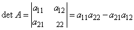
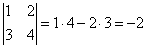
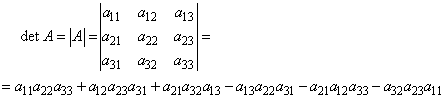
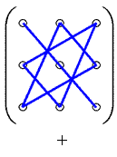
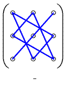
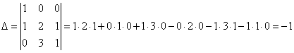

1.2. Определители второго и третьего порядка
Определителем квадратной матрицы  второго порядка называется
число, равное
второго порядка называется
число, равное
второго порядка называется
число, равное

Определитель
второго порядка
.
Например,
.
Определителем квадратной матрицы третьего порядка называется
число, равное
третьего порядка называется
число, равное

Определитель
третьего порядка
Это выражение получается по правилу треугольников (правилу
Саррюса), которое можно пояснить следующей схемой:
 
где элементы определителя изображаются кружками, а
соответствующие произведения - отрезками или треугольниками. Знаки «+» и «-»
соответствуют знакам слагаемых, входящих в определитель,
например,
.